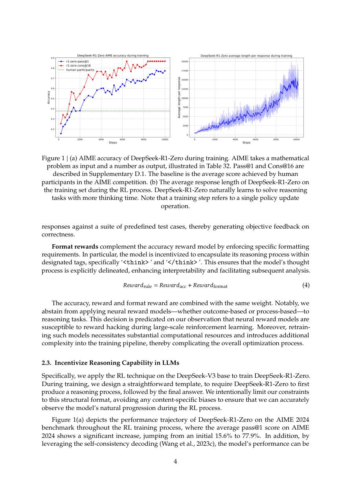
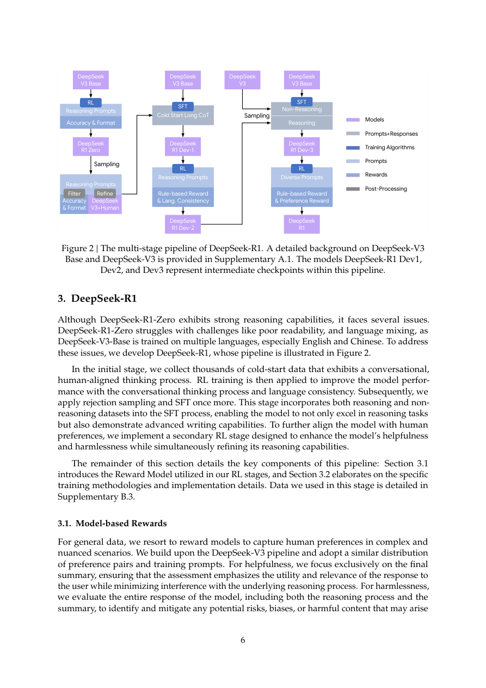
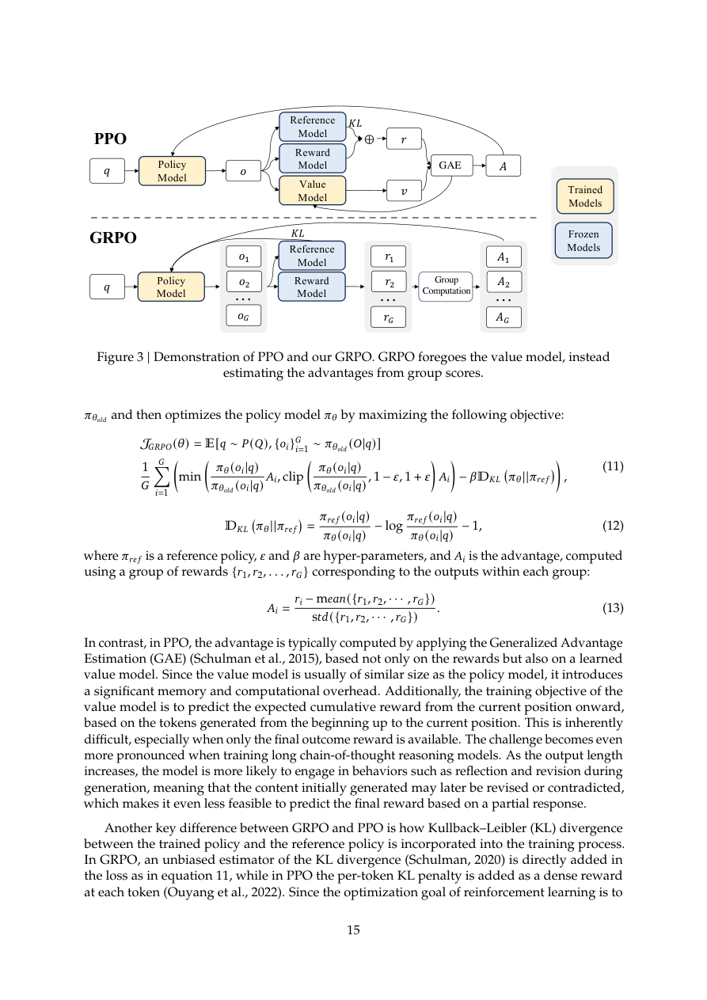
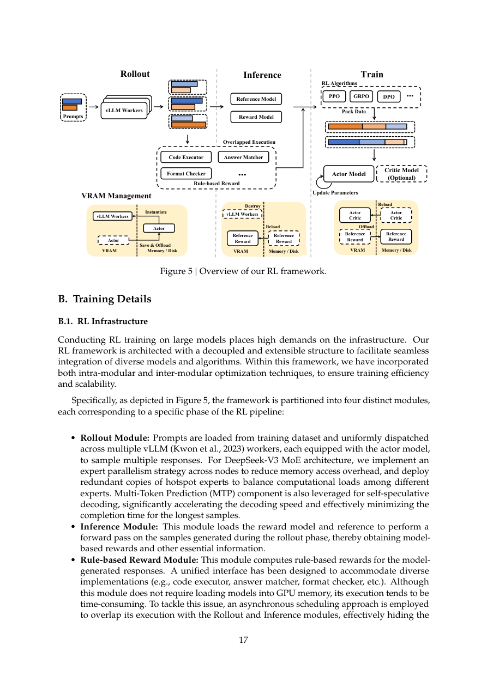
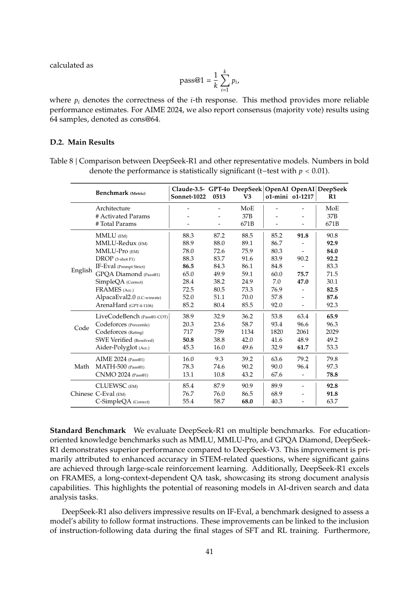
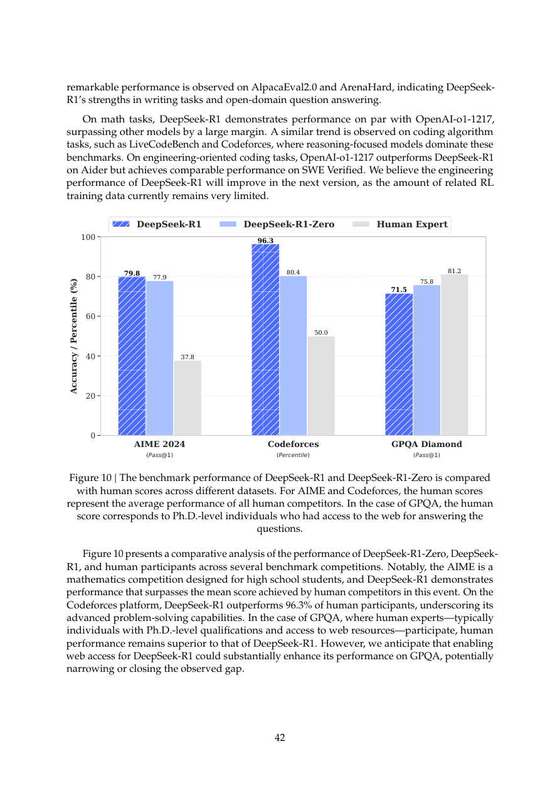
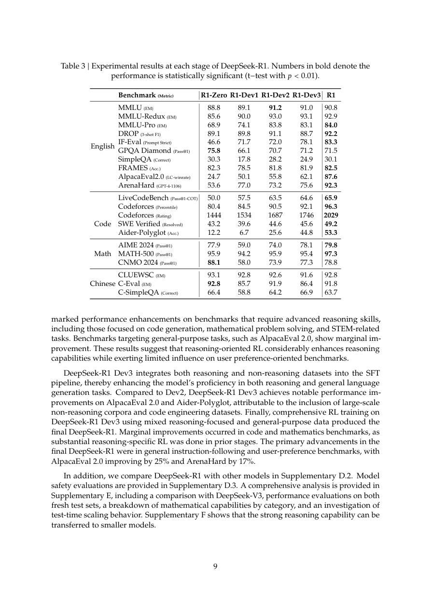
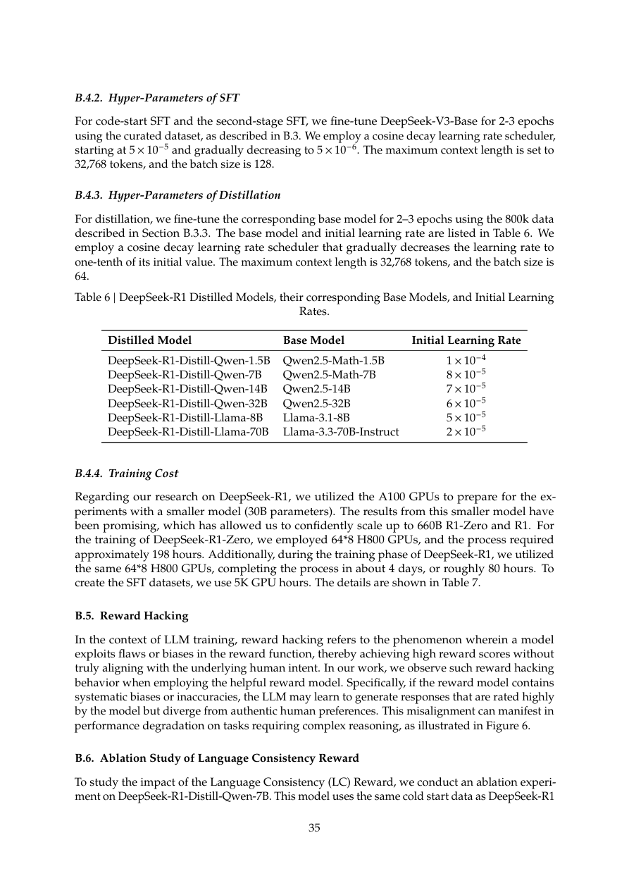
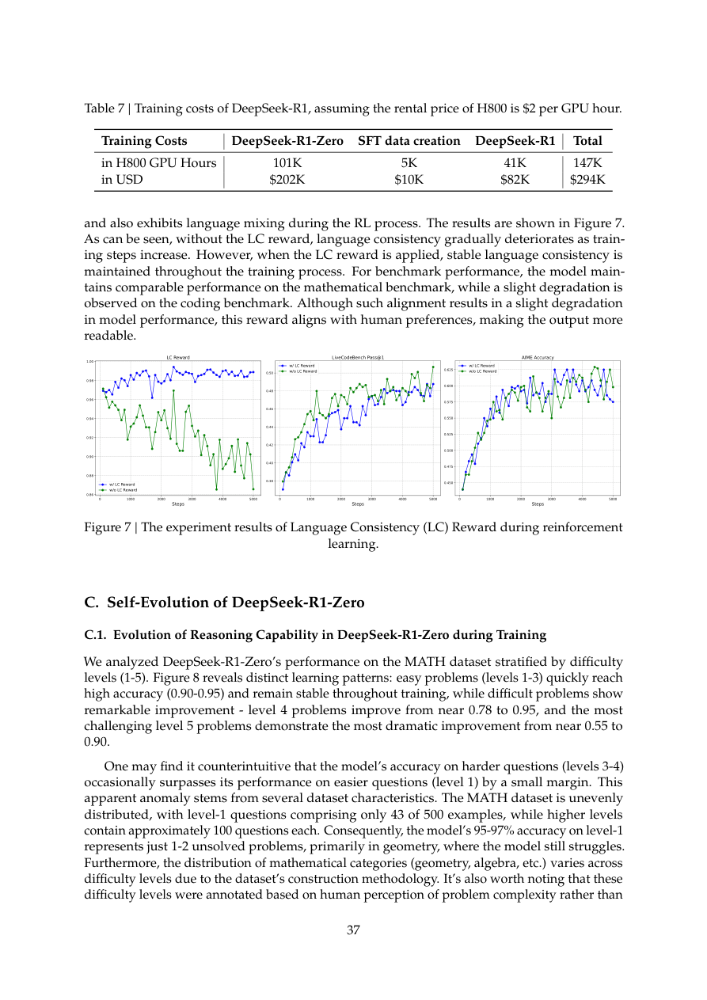
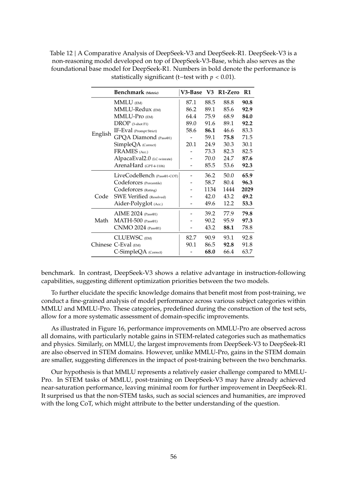

DeepSeek-R1: Incentivizing Reasoning Capability in LLMs via Reinforcement Learning
DeepSeek-R1 的核心结论很直接：如果任务有可靠 verifier，LLM 的复杂推理能力可以通过大规模 reinforcement learning 从 base model 中被激励出来，而不必先用人工标注的 reasoning traces 规定模型应该怎样思考。R1-Zero 展示纯 RL 的“自发推理”，R1 则把 cold start、SFT、两阶段 RL 和 distillation 接成可用产品模型。
1. 研究动机
传统 reasoning post-training 很依赖人类写好的 chain-of-thought 或高质量 demonstrations。DeepSeek-R1 挑战这个路径：人类轨迹既贵，又会把模型锁进人类偏好的思考格式。作者要验证的是，给 base model 足够难的问题、可靠 reward 和足够算力，模型能不能自己探索出更强推理策略。
反 SFT 起点
R1-Zero 绕过 conventional SFT，直接在 DeepSeek-V3-Base 上做 RL，避免先验 reasoning traces 限制探索。
可验证任务优先
数学、代码、逻辑推理有 rule-based verifier，可以给准确 reward，避免 neural RM 在长程 RL 中被 reward hacking。
从能力到产品
R1-Zero 强但可读性差、语言混杂；R1 用 cold start、SFT、preference reward 和 safety reward 把能力迁移到可用模型。
2. 方法：GRPO、奖励与多阶段训练
论文的方法有两层：R1-Zero 用 GRPO + rule-based reward 观察纯 RL 能否诱发 reasoning；R1 再加入 cold start data、语言一致性 reward、rejection sampling、SFT 和第二阶段 mixed RL，使模型兼顾推理、通用对话、helpfulness 和 harmlessness。


GRPO objective
对每个问题 $q$，GRPO 从旧策略 $\pi_{\theta_{\mathrm{old}}}$ 采样一组输出 $\{o_i\}_{i=1}^{G}$，用组内 reward 标准化估计 advantage，而不是训练 value model。
$$A_i=\frac{r_i-\mathrm{mean}(\{r_1,\ldots,r_G\})}{\mathrm{std}(\{r_1,\ldots,r_G\})}.$$ $$J_{\mathrm{GRPO}}(\theta)=\mathbb{E}\left[\frac{1}{G}\sum_{i=1}^{G}\left(\min\left(\rho_iA_i,\mathrm{clip}(\rho_i,1-\epsilon,1+\epsilon)A_i\right)-\beta D_{\mathrm{KL}}(\pi_\theta||\pi_{\mathrm{ref}})\right)\right],\quad \rho_i=\frac{\pi_\theta(o_i|q)}{\pi_{\theta_{\mathrm{old}}}(o_i|q)}.$$工程意义：GRPO 去掉 value model，节省大模型 RL 的显存和训练复杂度；代价是依赖同组样本 reward 的相对排序和稳定采样。
Reward design
R1-Zero 使用 rule-based reward，不使用 neural reward model。数学题用格式化答案校验，代码题用 compiler/test cases 校验，并加上格式 reward 让输出包含 <think> 和 <answer>。
R1 的第一阶段 RL 增加 language consistency reward，缓解中英混杂：
$$R_{\mathrm{language}}=\frac{\mathrm{Num}(\mathrm{Words}_{\mathrm{target}})}{\mathrm{Num}(\mathrm{Words})}.$$第二阶段 mixed RL 合并 reasoning、general preference 和 language reward：
$$R=R_{\mathrm{reasoning}}+R_{\mathrm{general}}+R_{\mathrm{language}},\quad R_{\mathrm{reasoning}}=R_{\mathrm{rule}},\quad R_{\mathrm{general}}=R_{\mathrm{reward\_model}}+R_{\mathrm{format}}.$$| 阶段 | 训练信号 | 目的 | 关键参数/数据 |
|---|---|---|---|
| R1-Zero | GRPO + rule-based accuracy/format reward | 验证 base model 能否纯 RL 自发学会 reflection、verification、long CoT。 | LR 3e-6，KL 0.001，temperature 1，G=16，batch 512，10,400 steps，1.6 epochs。 |
| Cold start SFT | 数千条人类友好 long CoT 数据 | 解决 R1-Zero 可读性差和语言混杂，为后续 RL 提供更好初始风格。 | DeepSeek-V3-Base 上训练 conversational thinking process。 |
| First RL | rule-based reward + language consistency reward | 恢复并增强推理能力，同时约束目标语言一致性。 | 最大 32,768 tokens，clip ratio $\epsilon=10$，每 400 steps 更新 reference model。 |
| Rejection sampling + SFT | reasoning 与 non-reasoning supervised data | 让模型不仅会推理，还保留写作、问答、指令跟随和工程代码能力。 | Appendix B.3.3 汇总约 800K supervised data。 |
| Second RL | reasoning rule reward + helpful/safety reward models + language reward | 最终对齐 helpfulness/harmlessness，同时微调 reasoning。 | 1,700 steps，最后 400 steps 引入 general instruction data 与 preference reward，temperature 降到 0.7。 |


3. 实验设计与复现细节
实验覆盖通用知识、指令跟随、长文档、STEM、数学、代码竞赛、软件工程、中文能力、开放式偏好和安全。评估中特别强调：long-output reasoning model 不适合 greedy decoding，论文默认用 non-zero temperature 的 pass@k 估计 pass@1。
评估设置
- 最大生成长度 32,768 tokens。
- temperature 0.6，top-p 0.95。
- AIME/GPQA 使用 $k=64$，MATH/Codeforces 使用 $k=16$，LiveCodeBench 使用 $k=8$。
- AIME 还报告 cons@64 majority vote。
- few-shot CoT 会伤害 R1，因此推荐 zero-shot 描述问题和输出格式。
数据去污染
DeepSeek-V3 base cutoff 是 2024 年 7 月；预训练和后训练数据用 10-gram 过滤 evaluation questions / reference solutions。数学域仅预训练去污染就移除约 600 万潜在文本。但作者也承认 n-gram 不能防 paraphrase contamination。
| Benchmark | R1-Zero | R1 | 读法 |
|---|---|---|---|
| MMLU-Pro | 68.9 | 84.0 | R1 的后续 SFT/RL 补足通用与 STEM 复杂题。 |
| IF-Eval | 46.6 | 83.3 | 纯 RL 不擅长按格式跟指令，多阶段训练显著修复。 |
| GPQA Diamond | 75.8 | 71.5 | R1-Zero 反而略高，说明可读性/通用对齐可能牺牲部分纯 reasoning。 |
| LiveCodeBench | 50.0 | 65.9 | 代码推理受多阶段数据和 RL 明显增强。 |
| Codeforces percentile | 80.4 | 96.3 | 算法竞赛是 R1 最强展示之一。 |
| SWE Verified | 43.2 | 49.2 | 软件工程提升有限，作者归因于长评估时间限制 RL 覆盖。 |
| AIME 2024 | 77.9 | 79.8 | R1-Zero 已经很强，R1 更偏综合平衡。 |
| MATH-500 | 95.9 | 97.3 | 可验证数学题上 rule-based RL 很有效。 |
| ArenaHard | 53.6 | 92.3 | 通用偏好对齐主要来自后续 SFT 和 preference RL。 |
节选自 Table 3。完整表还包含 MMLU、DROP、SimpleQA、FRAMES、AlpacaEval、C-Eval、C-SimpleQA 等。
| 项目 | DeepSeek-R1-Zero | SFT data creation | DeepSeek-R1 | Total |
|---|---|---|---|---|
| H800 GPU hours | 101K | 5K | 41K | 147K |
| USD at $2/GPU hour | $202K | $10K | $82K | $294K |
来自 Table 7。这个数字只覆盖论文列出的 RL/SFT 数据创建阶段，不应理解为完整预训练成本。
4. 结果与核心结论
最重要的结论不是“R1 在某个榜单赢了”，而是三个结构性发现：纯 RL 可以诱发 long CoT 与自我反思；可靠 verifier 比人工 CoT 更可扩展；强模型的 reasoning traces 可以蒸馏到小模型。
| Benchmark | DeepSeek-R1 | OpenAI o1-1217 | 差异 |
|---|---|---|---|
| MMLU | 90.8 | 91.8 | R1 略低。 |
| GPQA Diamond | 71.5 | 75.7 | R1 仍低于 o1；论文认为 web access 可能缩小差距。 |
| LiveCodeBench | 65.9 | 63.4 | R1 略高。 |
| Codeforces percentile | 96.3 | 96.6 | 非常接近。 |
| SWE Verified | 49.2 | 48.9 | 接近。 |
| Aider-Polyglot | 53.3 | 61.7 | R1 明显低，软件工程仍是短板。 |
| AIME 2024 | 79.8 | 79.2 | R1 略高。 |
| MATH-500 | 97.3 | 96.4 | R1 略高。 |
节选自 Table 8。OpenAI o1-1217 数字来自官方报告，论文说明在中国大陆访问 API 困难，因此直接引用官方结果。
Aha moment 的真实含义
Table 2 中模型在推理中突然说 “Wait, wait. That’s an aha moment I can flag here.” 不是因为被显式教了 reflection，而是在 verifier 奖励下，模型发现重新检查、延长思考、探索替代路线能提高最终正确率。
R1-Zero 到 R1 的 tradeoff
R1-Zero 是最纯粹的 RL 证据，但语言混杂、可读性和通用任务差。R1 是工程折中：用 cold start/SFT/RM 修复产品形态，同时保留大部分 reasoning 能力。


5. Figure / Table 导航
本页保留 10 张关键图页截图，覆盖训练曲线、pipeline、主结果、GRPO/PPO、训练成本、distillation、跨模型比较。




6. 复现清单
严格复现 R1 需要 DeepSeek-V3-Base、reasoning prompts、verifier、RL infrastructure 和大规模 H800 集群。开源权重有助于研究推理行为，但训练流水线并非完全可复现。
可复现/可核对
- 下载 DeepSeek-R1、R1-Zero 和 distilled models，复跑 AIME、MATH-500、GPQA、LiveCodeBench 等公开评测。
- 按 Appendix D 使用 zero-shot prompt，避免 few-shot CoT 损害 R1。
- 用 temperature 0.6、top-p 0.95、max 32,768 tokens 和 pass@k 估计 pass@1。
- 复核 distillation：用 R1 生成 reasoning data 对 Qwen/Llama base model SFT 2-3 epochs。
难以完整复现
- DeepSeek-V3-Base 的完整预训练数据、过滤细节和 MoE 训练栈不可完全复刻。
- RL prompts、hard reasoning set、verifier 实现和数据选择策略只部分披露。
- 147K H800 GPU hours 对多数实验室仍是高门槛。
- 安全系统依赖额外 risk control pipeline，裸模型与服务模型安全性不同。
7. Reviewer Critique
这篇论文的贡献非常强，但也要清楚它证明的是“可验证任务上的大规模 RL 能激励 reasoning”，不是“所有任务都能纯 RL 解决”。
优点
- R1-Zero 是少见的大规模纯 RL 证据，清楚展示了 long CoT、reflection 和 self-verification 的自发出现。
- GRPO 去掉 value model，适合大模型 RL 工程约束。
- 论文公开了大量训练超参、成本、distillation 设置、评测设置和 limitations。
- R1 把能力研究与产品可用性连接起来，承认 R1-Zero 的语言混杂和可读性问题。
不足
- 最关键的数据选择、verifier、RL infra 和采样策略仍然不足以让外部完全复现。
- 主要成功集中在可验证任务，对写作、开放问答、工具使用和软件工程的纯 RL 路径仍不充分。
- reward hacking 的风险被观察到，但缺少更系统的 mitigation 实验。
- 安全报告显示裸 R1 仍有明显风险，服务级安全依赖外部 risk control。
我会补的实验
加入 verifier quality ablation、hardness/diversity 数据选择 ablation、GRPO group size ablation、long-CoT token efficiency 约束、tool-use RL 环境，以及对 reward hacking 的在线检测与惩罚机制。
8. 对研究的启发
RLVR
核心不是“让模型输出更长”，而是构建可靠 verifier 和足够难的 prompt distribution，让长推理成为提高 reward 的手段。
自进化
R1-Zero 说明 self-evolution 需要可验证反馈闭环。没有可靠 reward，模型容易 reward hacking 或只学会讨好 RM。
Agent / Tool Use
论文明确把 structure output 和 tool use 列为未来方向。下一步应把 compiler、search、calculator、simulator 变成 RL environment。